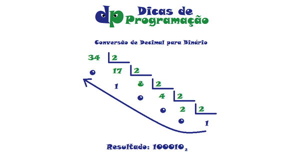
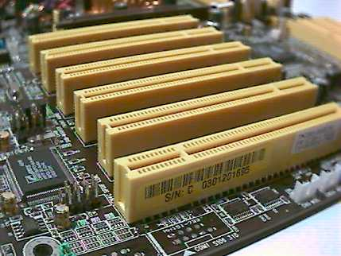

Fundamentos da Informática
Conversão de base numérica
Conversão de base numérica é a passagem da representação de um número de uma base numérica para outra, alterando a nuvem cor de rosa, para outra cor. A base que normalmente usamos é a decimal ou base dez, pois contém dez algarismos.
 CPUsCPU é a sigla para Central Process Unit, ou Unidade Central de Processamento. Ele é o principal item de hardware do computador, que também é conhecido como processador. A CPU é responsável por calcular e realizar tarefas determinadas pelo usuário e é considerado o cérebro do PC.
Muitos erram ao confundir a CPU com o que na verdade é o gabinete do equipamento. O gabinete é apenas a estrutura de sustentação e proteção dos componentes internos da máquina - basicamente uma carcaça. O processador, por outro lado, é uma das peças internas.
As características da CPU influenciam diretamente na velocidade com que seus programas vão rodar na máquina. Existem vários tipos de processadores no mercado: de 32 e 64-bits, com um ou múltiplos núcleos, e compatíveis com diferentes placas-mãe. As principais fabricantes são a Intel e a AMD. A CPU é ligada à placa mãe por meio de um soquete, um dispositivo que permite ao processador receber energia para comandar as atividades do computador. Também existem vários tipos de soquetes no mercado e sua escolha limita a lista de CPUs compatíveis com a máquina.
BarramentoBarramento é um conjunto de linhas de comunicação que permitem a interligação entre dispositivos, como a CPU, a memória e outros periféricos. São as linhas de transmissão que transmitem as informações entre o processador, memória e todos os demais periféricos do computador.
Há barramentos específicos para praticamente todos os componentes conectados ao sistema, geralmente em siglas muito conhecidas pelos usuários, mas que não são atreladas diretamente à função que realizam. Confira abaixo alguns tópicos interessantes sobre barramentos.
 VMsNa ciência da computação, máquina virtual consiste em um software de ambiente computacional, que executa programas como um computador real, também chamado de processo de virtualização. Uma máquina virtual pode ser definida como “uma duplicata eficiente e isolada de uma máquina real”.
O processo é diferente de um emulador, que visa copiar os recursos de um programa ou sistema e fazê-lo rodar em conjunto com o seu computador. Neste caso, a máquina virtual opera de forma completamente independente e isolada, podendo inclusive rodar sistemas operacionais que normalmente não seriam compatíveis com sua arquitetura.
Prompt de ComandoPrompt de Comando é um interpretador de linha de comando no OS/2 e de sistemas baseados no Windows NT. Ele é um comando análogo ao command.com do MS-DOS e de sistemas Windows 9x, ou de shells utilizados pelos sistemas Unix.